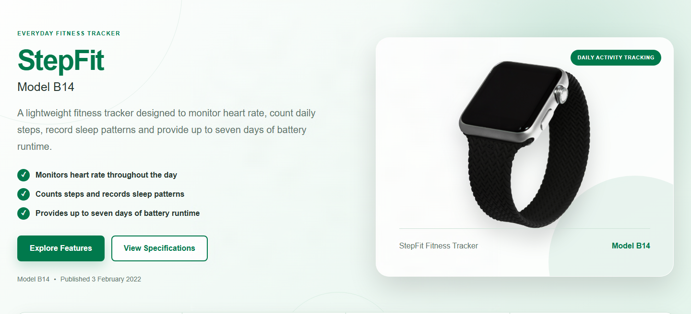
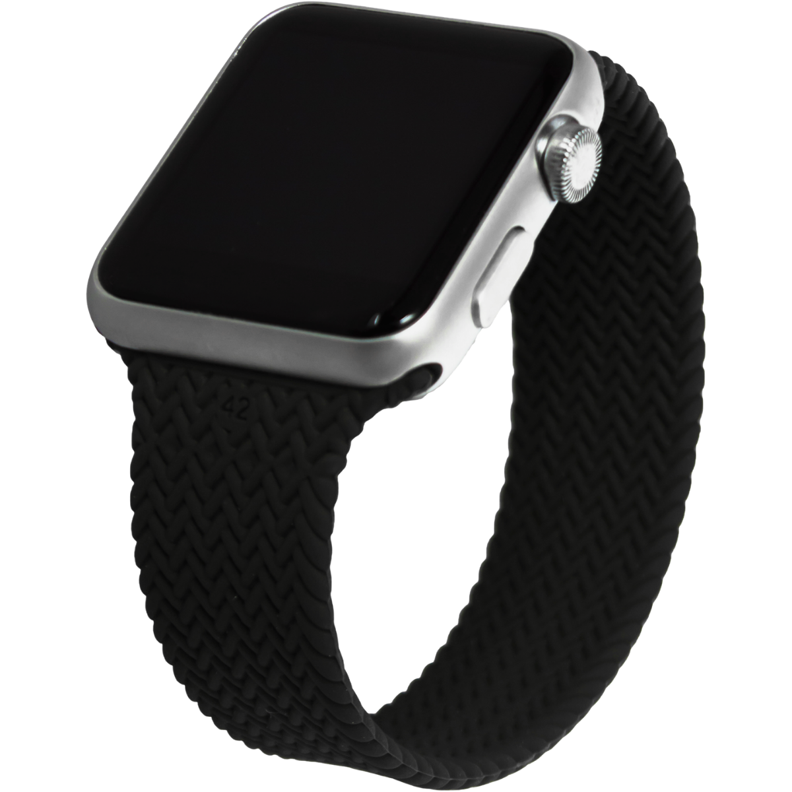

Heart-rate monitoring
The rear optical sensor estimates heart rate throughout the day when the tracker is positioned securely against the wrist.

Credentials applied with: Adobe Content Authenticity
Asset type: PNG image with embedded Content Credentials
Credential location: Embedded in the asset file
Last verification: Passed on 19/11/2026 using Content Credentials Verify
Verify Content CredentialsCredentials applied with: Adobe Content Authenticity
Asset type: PNG image with embedded Content Credentials
Credential location: Embedded in the asset file
Last verification: Passed on 19/11/2026 using Content Credentials Verify
Verify Content CredentialsDaily activity at a glance
GreenTrail StepFit B14 is a lightweight wrist-worn fitness tracker designed to record everyday activity and general wellness information.
The tracker uses an optical sensor to estimate heart rate, an integrated motion sensor to count steps and movement data to estimate sleep duration and sleep stages.
StepFit B14 provides up to seven days of battery runtime under typical-use conditions and connects to a compatible mobile application through Bluetooth.
Product highlights
StepFit B14 combines heart-rate monitoring, step counting, sleep tracking and mobile synchronization in a compact wrist-worn device.
The rear optical sensor estimates heart rate throughout the day when the tracker is positioned securely against the wrist.
The integrated motion sensor records detected steps and supports daily activity totals in the tracker and mobile application.
The tracker uses movement and heart-rate information to estimate sleep duration and general sleep-stage patterns.
The rechargeable battery provides up to seven days of runtime under the stated typical-use test conditions.
Bluetooth synchronization transfers activity records to the compatible GreenTrail mobile application for review.
Designed for daily wear
Charge StepFit B14 before first use, pair it with the compatible mobile application and wear the band securely above the wrist bone during normal activity.
Use the mobile application to detect the tracker, complete pairing and configure the preferred activity settings.
Adjust the band so the optical sensor maintains stable skin contact without being uncomfortably tight.
Synchronize the tracker regularly to review steps, heart-rate estimates, sleep records and battery status.
Battery runtime
StepFit B14 provides up to seven days of battery runtime under typical-use conditions, while continuous display use, frequent notifications, repeated synchronization and intensive heart-rate monitoring may shorten the runtime.
Product details
Key product information for the GreenTrail StepFit B14 fitness tracker.

| Product name | StepFit |
|---|---|
| Model | B14 |
| Product category | Fitness tracker |
| Display | 1.47-inch colour display |
| Heart-rate sensor | Optical wrist sensor |
| Activity tracking | Steps, distance and estimated calories |
| Sleep tracking | Duration and estimated sleep stages |
| Battery runtime | Up to seven days |
| Charging time | Approximately two hours |
| Wireless connection | Bluetooth 5.1 |
| Water resistance | IP68 |
| Product weight | 28 g including band |
| Product code | GT-B14-2026 |
Getting started
Complete the following steps before and during normal operation.
Connect the supplied charging cable and charge the tracker fully before using it for the first time.
Install the compatible GreenTrail mobile application and follow its instructions to pair StepFit B14.
Position the tracker above the wrist bone and adjust the band to maintain comfortable and stable sensor contact.
Synchronize activity records regularly and recharge the tracker when the battery indicator shows a low charge level.
Important information
Follow these precautions when wearing, charging, cleaning or storing StepFit B14.
Clean and dry StepFit B14 before storage, maintain a partial battery charge and keep it in a cool and dry location away from direct sunlight and extreme temperatures.
Questions and Answers
Find answers about StepFit B14, including battery runtime, heart-rate monitoring, step counting, sleep tracking and charging.
StepFit B14 provides up to seven days of battery runtime under typical-use conditions, although intensive features may shorten the runtime.
A full charge takes approximately two hours when the supplied charging cable is connected to a compatible power source.
StepFit B14 can estimate heart rate throughout the day when continuous monitoring is enabled and the tracker is worn correctly.
The tracker uses an integrated motion sensor and movement-processing software to identify and record detected walking steps.
Yes, StepFit B14 uses movement and heart-rate information to estimate sleep duration and general sleep-stage patterns.
StepFit B14 is manufactured and distributed by GreenTrail.